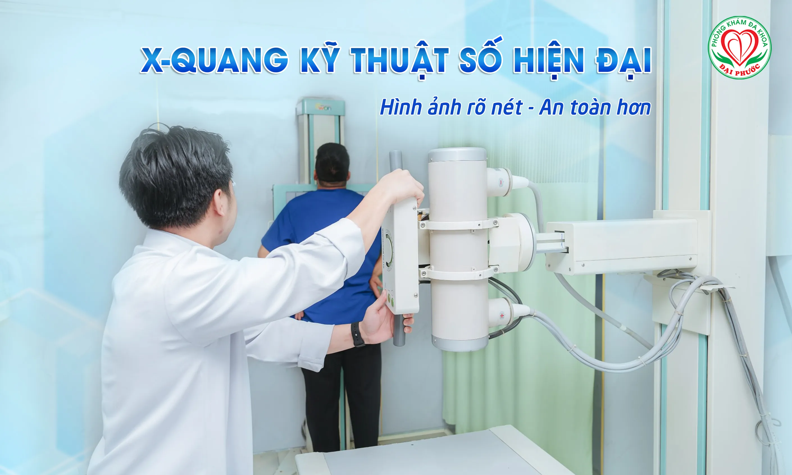
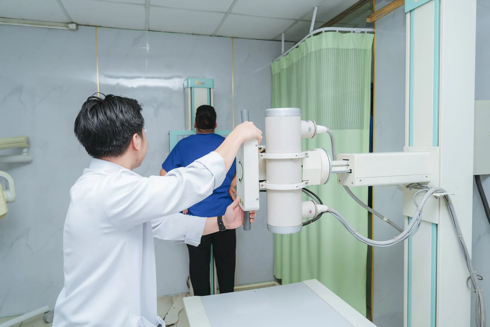

X-quang kỹ thuật số: Hình ảnh rõ nét, ít tia xạ hơn - Bước tiến vượt bậc trong chẩn đoán hiện đại
Giới thiệu về X-quang kỹ thuật số
X-quang kỹ thuật số (Digital Radiography - DR) đã trở thành tiêu hiện đại trong chẩn đoán hình ảnh, thay thế dần phương pháp X-quang truyền thống. Khác với kỹ thuật cũ sử dụng phim và hóa chất tráng rửa, X-quang kỹ thuật số sử dụng các cảm biến điện tử để chuyển đổi tia X thành hình ảnh số ngay lập tức.
Nguyên lý hoạt động cơ bản:
- Máy phát tia X chiếu qua cơ thể bệnh nhân
- Cảm biến điện tử thu nhận tia X sau khi xuyên qua các mô
- Tín hiệu được chuyển đổi thành hình ảnh số hiển thị trên màn hình máy tính
- Hình ảnh có thể được chỉnh sửa, lưu trữ và truyền tải dễ dàng
Ưu điểm vượt trội của X-quang kỹ thuật số
1. Giảm đáng kể liều bức xạ
Đây là ưu điểm quan trọng nhất của công nghệ mới. X-quang kỹ thuật số giảm liều bức xạ từ 50-90% so với phương pháp truyền thống nhờ:
- Độ nhạy cao của cảm biến điện tử
- Không cần tăng cường độ tia X để có hình ảnh rõ nét
- Hệ thống tự động điều chỉnh thông số tối ưu
2. Chất lượng hình ảnh vượt trội
Độ phân giải cao và tương phản tốt:
- Hình ảnh sắc nét, chi tiết rõ ràng
- Có thể phóng to, điều chỉnh độ tương phản
- Không bị phai màu hay hỏng theo thời gian
- Hiển thị tức thời trên màn hình máy tính
3. Tiết kiệm thời gian và chi phí
Quy trình nhanh gọn:
- Kết quả có ngay sau khi chụp (3-5 giây)
- Không cần thời gian tráng rửa phim
- Loại bỏ chi phí phim X-quang và hóa chất
- Giảm thời gian chờ đợi của bệnh nhân
4. Lưu trữ và chia sẻ thuận tiện
- Lưu trữ lâu dài trên hệ thống máy tính
- Dễ dàng sao chép và chia sẻ qua mạng
- Có thể in trên giấy thường hoặc phim đặc biệt
- Tích hợp với hệ thống quản lý bệnh viện
Ứng dụng của X-quang kỹ thuật số
Chẩn đoán bệnh lý xương khớp
- Gãy xương, nứt xương
- Viêm khớp, thoái hóa khớp
- Loãng xương
- Ung thư xương
Khám bệnh hệ hô hấp
- Viêm phổi, lao phổi
- Ung thư phổi
- Tràn dịch màng phổi
- Khí phế thũng
Đánh giá hệ tiêu hóa
- Tắc ruột
- Sỏi túi mật
- Sỏi thận
- Đánh giá cấu trúc dạ dày, ruột
Khám sức khỏe định kỳ
- Tầm soát các bệnh lý tiềm ẩn
- Theo dõi tiến triển bệnh
- Đánh giá hiệu quả điều trị
Quy trình thực hiện X-quang kỹ thuật số
Chuẩn bị trước khi chụp
- Tháo bỏ đồ kim loại: trang sức, kẹp tóc, đồng hồ
- Thay trang phục: mặc áo bệnh viện nếu cần
- Tư vấn trước thăm khám: bác sĩ giải thích quy trình
Trong quá trình chụp
- Định vị: Kỹ thuật viên hướng dẫn tư thế chụp phù hợp
- Chụp ảnh: Giữ yên trong vài giây khi máy hoạt động
- Kiểm tra kết quả: Hình ảnh hiển thị ngay trên màn hình
Sau khi chụp
- Bệnh nhân có thể về ngay lập tức
- Không cần chờ rửa phim
- Bác sĩ đọc kết quả và tư vấn trong ngày
An toàn và lưu ý khi chụp X-quang kỹ thuật số
Đối tượng cần thận trọng
- Phụ nữ mang thai: Chỉ chụp khi thật cần thiết
- Trẻ em: Sử dụng tấm chắn bảo vệ các cơ quan nhạy cảm
- Người có tiền sử dị ứng: Thông báo cho bác sĩ
Biện pháp bảo vệ
- Sử dụng tấm chắn chì bảo vệ các bộ phận không cần chụp
- Tuân thủ nghiêm ngặt thời gian phơi nhiễm
- Bác sĩ chỉ định khi lợi ích vượt trội hơn rủi ro

Sự khác biệt giữa X-quang kỹ thuật số và truyền thống
|
Tiêu chí |
X-quang kỹ thuật số |
X-quang truyền thống |
|
Thời gian có kết quả |
3-5 giây |
15-30 phút |
|
Liều bức xạ |
Giảm 50-90% |
Cao hơn đáng kể |
|
Chất lượng hình ảnh |
Sắc nét, có thể chỉnh sửa |
Cố định, không thể thay đổi |
|
Chi phí dài hạn |
Tiết kiệm |
Tốn kém (phim, hóa chất) |
|
Lưu trữ |
Kỹ thuật số, lâu dài |
Phim có thể hỏng theo thời gian |
|
Chia sẻ |
Dễ dàng qua mạng |
Khó khăn, cần sao chép |
Xem thêm: X-Quang và CT Khác Nhau Gì? So Sánh Chi Tiết Để Chọn Đúng Phương Pháp
Khi nào cần chụp X-quang kỹ thuật số?
Triệu chứng cần thăm khám
- Đau xương, khớp kéo dài
- Ho, khó thở, đau ngực
- Chấn thương, tai nạn
- Đau bụng, buồn nôn
- Sụt cân không rõ nguyên nhân
Khám sức khỏe định kỳ
- Người trên 40 tuổi: 1-2 lần/năm
- Người có tiền sử bệnh lý: theo chỉ định bác sĩ
- Người làm việc trong môi trường độc hại
Lựa chọn địa chỉ X-quang kỹ thuật số uy tín
Tiêu chí đánh giá
- Trang thiết bị hiện đại: máy X-quang kỹ thuật số thế hệ mới
- Đội ngũ chuyên môn cao: bác sĩ chuyên khoa có kinh nghiệm
- Quy trình chuẩn: tuân thủ nghiêm ngặt các nguyên tắc an toàn
- Dịch vụ tận tâm: tư vấn chu đáo, kết quả nhanh chóng
Cam kết chất lượng
- Sử dụng máy móc nhập khẩu từ các nước phát triển
- Bác sĩ được đào tạo chuyên sâu về chẩn đoán hình ảnh
- Tuân thủ các tiêu chuẩn an toàn quốc tế
- Hỗ trợ tư vấn 24/7
Xem thêm: Máy chụp X-quang kỹ thuật số WSR-40: Giải pháp hình ảnh chuẩn xác và hiệu quả cho y tế hiện đại
Kết luận
X-quang kỹ thuật số đại diện cho bước tiến vượt bậc trong lĩnh vực chẩn đoán hình ảnh, mang lại nhiều lợi ích thiết thực cho cả bác sĩ và bệnh nhân. Với ưu điểm giảm liều bức xạ, chất lượng hình ảnh cao, thời gian nhanh chóng và chi phí tiết kiệm, phương pháp này đang trở thành lựa chọn hàng đầu tại các cơ sở y tế hiện đại.
Việc đầu tư vào công nghệ X-quang kỹ thuật số không chỉ nâng cao chất lượng dịch vụ y tế mà còn thể hiện cam kết bảo vệ sức khỏe cộng đồng. Bệnh nhân có thể hoàn toàn yên tâm khi lựa chọn phương pháp này cho việc chẩn đoán và theo dõi sức khỏe.
Để được tư vấn chi tiết về X-quang kỹ thuật số và đặt lịch khám, bệnh nhân nên liên hệ với các cơ sở y tế uy tín có trang bị đầy đủ thiết bị hiện đại và đội ngũ bác sĩ chuyên môn cao.

Các tin khác


ĐĂNG KÝ NHẬN BẢN TIN

Phòng Khám Đa Khoa Đại Phước
- 829 đường 3 tháng 2, Phường Minh Phụng, Thành phố Hồ Chí Minh
- 1900 599 941 - 0938 829 831
- (028) 3955 7999
- info@ytedaiphuoc.vn
-

6:00 - 11:30 (Chủ Nhật)


GPKD số : 0312023683 cấp ngày: 29/10/2012 Bởi Sở Kế Hoạch và Đầu Tư TP.Hồ Chí Minh
Đại diện: Tống Nguyễn Diễm Hồng